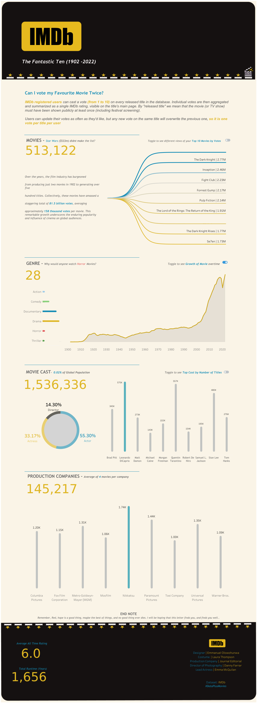

Project 1
Tool used: Excel. This data analysis provides valuable insights into Apple's sales performance, regional sales distribution, product profitability, and sales methods. Apple can use these insights to make informed decisions about marketing strategies, product development, and resource allocation to further enhance its sales and profitability. recommendations for improving sales and revenue.


The Tour de France data analysis presents insights: a challenging 4188 km average distance, thrilling 80+ km/hr downhill speeds, global participation, and a 63% completion rate. France leads in stage wins, and winning speeds have increased by 62.64%. Recommendations include diversifying routes, global marketing, and sustainability to sustain its premier status.

The Stockholm Cholera Outbreak of 1853 was a significant public health crisis in Sweden's capital city, Stockholm. Cholera, a waterborne disease, struck the city, resulting in widespread illness and fatalities. The outbreak was attributed to contaminated drinking water, as the city's water supply was polluted by human waste and sewage. Poor sanitation and overcrowding exacerbated the situation, making it challenging to contain the spread of the disease.

Remember, Red, hope is a good thing, maybe the best of things, and no good thing ever dies. I will be hoping that this letter finds you, and finds you well…
This was Andy’s letter to Red(Morgan Freeman) at the end of movie Shawshank Redemption
I had to watch the movie again after working on this 120 years worth of dataset from IMDb using Tableau. It was a whole lot of work but it was an exciting project/dashboard I enjoyed building.
I now see why Shawshank Redemption is the best rated movie on IMDB Movie
🎥Fun Insight: it will take you approximately 1,656 years to watch all the 513,122 movies on IMDb.

I created this interactive newsletter-styled dashboard using Tableau, analyzing data from Formula 1
Here are some interesting facts I discovered working on this data:
- It takes approximately 3 seconds to change the tires of a Formula 1 racing car during a pit stop.
- Drivers can lose up to four pounds per race due to the intense physical exertion.

This Dashboard looks at the work of Dr. Nova & Sonia Goodwin who resigned from public sector managerial roles to make a difference in the mainstream heathcare system in Australia. This led to the birth of sunny street, a mobile outreach unit with medical practitioners. The visualization is based on data between July 2018 - April 2021
.png)
This Superstore Dashboard analyses the sales and revenue of a sample dataset, some key recommendations are;Customized Corporate Furniture Packages: Develop customized furniture packages tailored to the needs of Corporate clients to encourage bulk orders. Offer flexible options that cater to different office sizes and layouts, providing value-added services such as installation and maintenance to enhance customer satisfaction.
Consumer Engagement Programs: Implement consumer engagement programs to incentivize repeat purchases of office supplies. Loyalty programs, special promotions, and personalized offers can encourage consumers to make more frequent purchases, leading to increased sales and higher profits.
Strategic Pricing for Office Supplies: Optimize pricing strategies for office supplies by balancing profit margins with competitive pricing.
Conduct market research to identify pricing trends and adjust discounts strategically to drive sales without compromising profitability.
Technology Product Diversification: Expand the range of Technology products offered to attract a wider customer base. Introduce new and innovative tech products with varying price points to cater to different consumer segments while maintaining a balance between profit margins and inventory management.
Operational Efficiency Improvements: Streamline operational processes to enhance efficiency and reduce costs across all categories. Implement inventory management systems to optimize stock levels, minimize wastage, and improve overall supply chain logistics to ensure timely deliveries and customer satisfaction